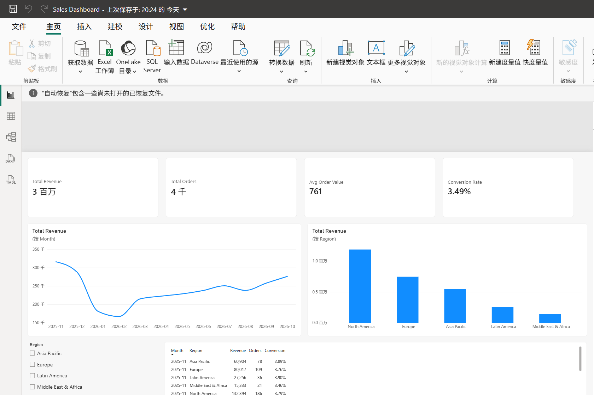
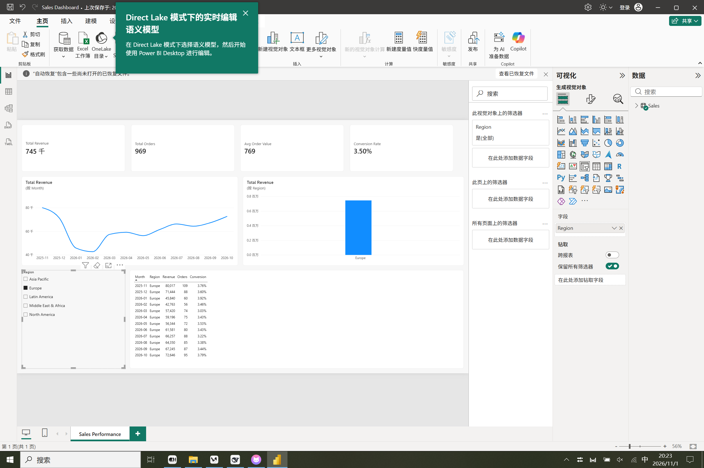

One page, built end to end in Power BI Desktop — model, measures and layout.
Demo data · not a production systemPower BI reporting built end to end in Power BI Desktop. A report can include KPI cards with period-over-period deltas, monthly and weekly trend lines, category comparisons by region or channel, slicers that filter the whole page, and a sortable detail table. Data comes from Excel, CSV or a database connection, modelled in Power Query with DAX measures on top. You receive the .pbix file plus a one-page handover note. Changing data or fields is free; restyling (colours, fonts, layout) is quoted per round.


These are static captures of the report. The filter is live in the .pbix file —
open it in Power BI Desktop, no data connection needed, the data is stored in the file.